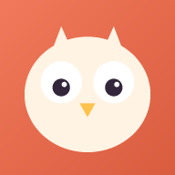
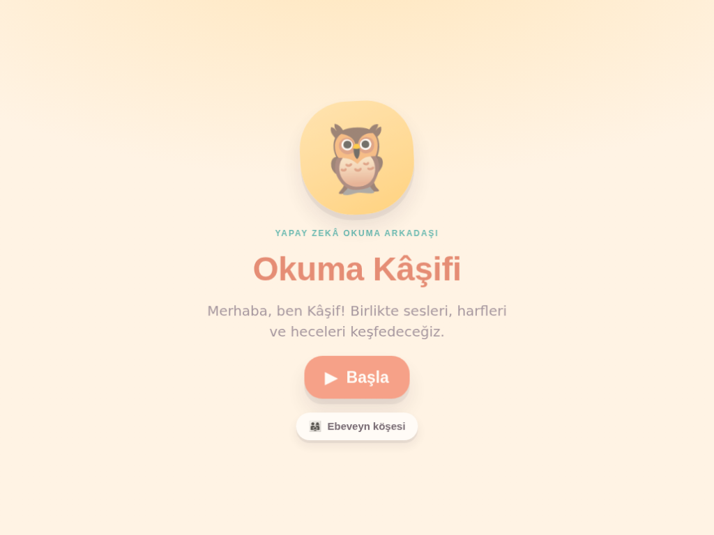
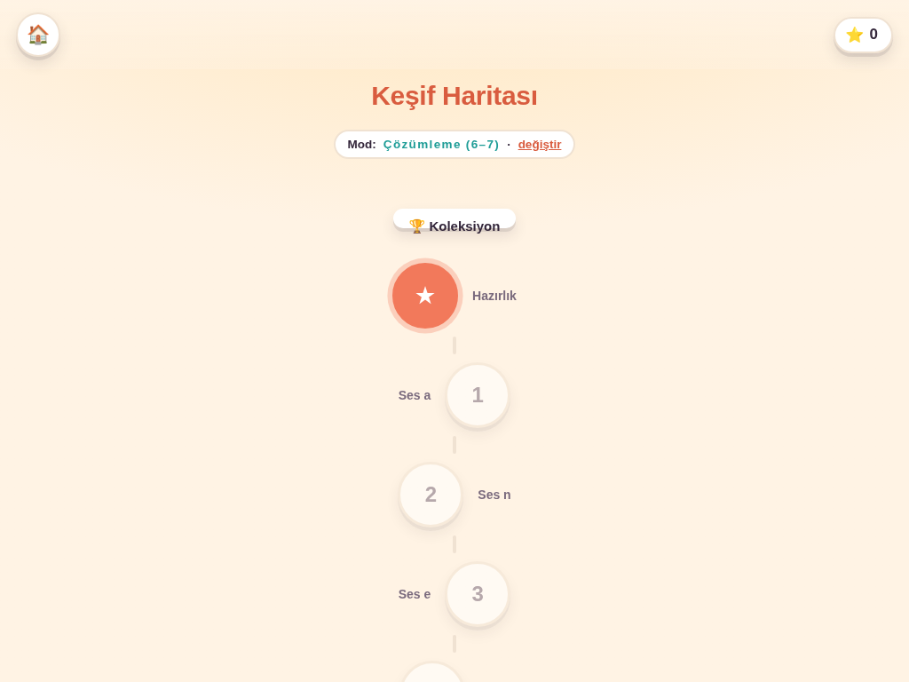
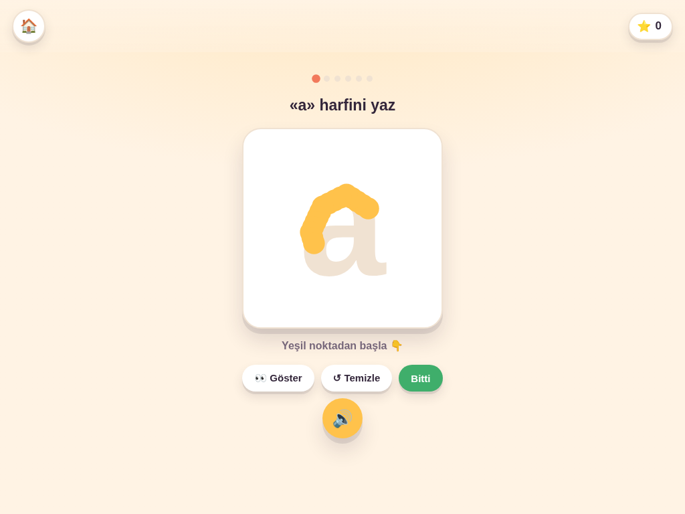

yapay zekâ okuma arkadaşı
4–7 yaş çocuklara okuma-yazmanın temellerini, sevimli bir baykuş rehber "Kâşif" eşliğinde, oyunlaştırılmış ve sese dayalı öğretiyoruz. Kurulum yok, hesap yok — tarayıcıda hemen başlar.
İlk ses grubu (6 ders, 6 oyun) tamamen ücretsiz — kredi kartı istenmez.
ne, kimin için
Sesleri tanıma, harf çizme, parmak kası ısınma çalışmaları. Okuma beklentisi yok, baskı yok — yalnızca keşif ve oyun.
Ses → hece → kelime → cümle. Okuma Kulübü'nde kısa metinler okur, anlama sorularını yanıtlar.
Ayrıntılı ilerleme raporu, Ses Karnesi (hangi ses zorlanıyor), evde yapılabilecek etkinlik önerileri, yazdır/PDF.
neler var
Resim, ses veya büyük/küçük eşleme
Başlangıç, farklı ses, bitiş sesi
Tanıma, eksik harf, hece→resim
Harf taşlarını sırayla dizme
Kelime taşlarından cümle kurma
Vuruş vuruş kılavuz, 5 kademe
Kısa metin + anlama soruları
Ses ustalığı, gün serisi, ilk kelime
uygulamadan

Karşılama
Keşif Haritası
Harf Çizfiyatlandırma
1. ses grubu (a·n·e·t·i·l, 6 ders, tüm oyun tipleri) her zaman ücretsizdir. 2.–5. ses grupları ve ek özellikler premium plandadır.
7 gün ücretsiz premium deneme uygulama içinden başlatılabilir · istediğiniz an iptal, gizli ücret yok · fiyatlar KDV dahildir.
sıkça sorulanlar
Hayır. Kâşif önceden hazırlanmış, sabit içerikler üzerinden konuşan bir rehberdir — serbest metin girişi yoktur, çocuğunuz bir sohbet robotuyla konuşmaz.
Hiç yok. Uygulamada reklam, üçüncü taraf izleyici/analiz veya çocuğa yönelik satış ekranı bulunmaz.
Hiçbir yere. İlerleme yalnızca cihazınızda (tarayıcı yerel deposu) tutulur, sunucuya veri gönderilmez. Ayrıntılı KVKK aydınlatma metni uygulama içinde Ebeveyn köşesi → Yasal/Gizlilik sekmesindedir.
Evet — bir kez çevrimiçi açtıktan sonra Okuma Kâşifi bir PWA (ana ekrana eklenebilir uygulama) olarak çevrimdışı da çalışır.
Aylık/yıllık planlar dilediğiniz an iptal edilebilir, gizli ücret veya cayma bedeli yoktur. Tek seferlik pakette zaten abonelik olmadığından iptal gerekmez.
4–7 yaş arası. 4–5 yaş "Keşif" modunda okuma beklentisi olmadan sesleri/harfleri tanır; 6–7 yaş "Çözümleme" modunda hece/kelime/cümle okumaya adım atar.
İlk ses grubu ücretsiz, kurulum gerekmez — tarayıcıda hemen açılır.
▶ Ücretsiz Başla